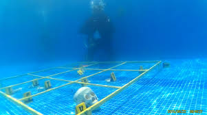

Historia
La criminalística subacuática, aunque parece un campo reciente, tiene raíces en el desarrollo de la ciencia forense y las investigaciones criminales en ambientes complejos. Su origen puede rastrearse hasta los primeros intentos de recuperar pruebas sumergidas y cuerpos de agua en investigaciones criminales. Sin embargo, el desarrollo y profesionalización de esta disciplina han ido de la mano con los avances en tecnología de buceo, exploración marina y técnicas forenses a partir del siglo XX.
En las décadas de 1960 y 1970, se empezaron a realizar investigaciones más formales en ambientes acuáticos en países como Estados Unidos y el Reino Unido, cuando los buzos militares y algunos cuerpos policiales notaron la importancia de contar con conocimientos especializados para operaciones bajo el agua. Durante este periodo, surgió la necesidad de tener entrenamientos específicos para recuperar objetos en el fondo de cuerpos de agua, lo que eventualmente llevó al desarrollo de metodologías y técnicas específicas.

En la década de 1980, comenzaron a crearse unidades de buceo forense en las fuerzas de seguridad de países desarrollados, con un interés particular en mejorar las técnicas de recuperación de pruebas sin comprometer su integridad. Con el tiempo, la criminalística subacuática se ha expandido, especialmente con el surgimiento de tecnologías avanzadas, como los vehículos operados a distancia (ROVs), y la fotografía y videografía subacuáticas, que permiten una documentación detallada de los hallazgos en lugares de difícil acceso.
¿Que es?
La criminalística subacuática es una especialidad dentro de la criminalística que se dedica a la búsqueda, recuperación, análisis y conservación de evidencias en entornos acuáticos, con el fin de contribuir a la investigación de delitos o accidentes. Los entornos pueden incluir ríos, lagos, mares, pozos, estanques y otros cuerpos de agua.
Este campo de la criminalística tiene el propósito de aplicar metodologías forenses específicas para entornos subacuáticos, teniendo en cuenta que la dinámica del agua puede alterar o destruir pruebas con facilidad. Por ello, la criminalística subacuática no solo implica habilidades de buceo, sino también conocimientos avanzados en preservación de la escena, protocolos de investigación en ambientes húmedos, y técnicas de documentación y recolección de evidencias.
¿Para que sirve?
La criminalística subacuática sirve para:
√ Recuperación de cuerpos humanos: En casos de accidentes, homicidios o suicidios en el agua, los equipos de criminalística subacuática se encargan de localizar y extraer los restos humanos para su posterior análisis.
√Recuperación de objetos o pruebas: Ayuda a recuperar armas, vehículos, objetos personales o cualquier otro tipo de prueba que pueda haber sido lanzada al agua intencionalmente o accidentalmente, con el objetivo de evitar su hallazgo o destrucción.
√Documentación de la escena del crimen subacuática: Permite documentar con exactitud la ubicación y el estado en que se encuentran las pruebas y los cuerpos dentro del agua, lo cual es esencial para entender cómo ocurrieron los hechos.
√Apoyo en investigaciones de naufragios o accidentes marítimos: Este campo también se aplica en investigaciones de naufragios o accidentes en el mar, donde es necesario determinar las causas del incidente.
Paises
La criminalística subacuática es utilizada en varios países a nivel mundial, particularmente en aquellos que cuentan con cuerpos de agua considerables o acceso a costas. Algunos países donde este campo es ampliamente desarrollado incluyen:
√ Estados Unidos: Varias agencias policiales, como el FBI, cuentan con unidades especializadas en criminalística subacuática. Los equipos de buceo forense son parte de la policía estatal y los cuerpos de rescate.
√Reino Unido: Existen unidades de buceo especializadas en la policía y en la Marina Real que se dedican a investigaciones y rescates en el agua.
√Canadá: La Policía Montada de Canadá tiene equipos de buceo forense que actúan en ríos, lagos y otras áreas acuáticas en todo el país.
√Australia: La policía australiana cuenta con unidades de buceo en cada estado, quienes se encargan de recuperar pruebas y cuerpos en ambientes subacuáticos.
√Colombia y América Latina: En países de América Latina, como Colombia, se están desarrollando unidades de criminalística subacuática en colaboración con fuerzas militares y organismos de rescate debido a la vasta cantidad de ríos y cuerpos de agua en la región. En Colombia, algunas unidades de la Policía Nacional y la Armada cuentan con personal capacitado en estas áreas.